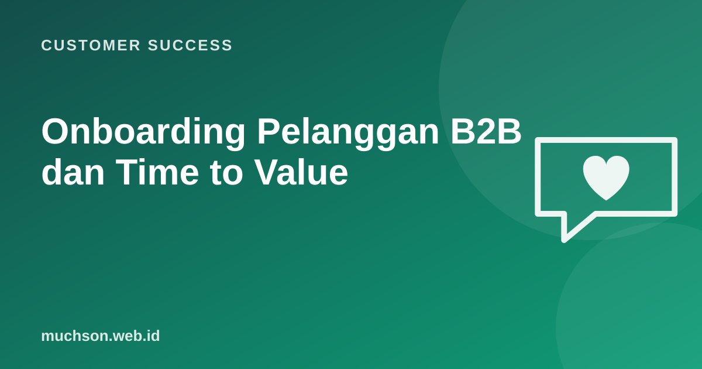

Beranda › Artikel › Customer Success
Customer SuccessOnboarding Pelanggan B2B dan Time to Value
Kontrak sudah ditandatangani, tim sales merayakan. Bagi customer success, pekerjaan sesungguhnya baru dimulai. Banyak pelanggan B2B yang akhirnya berhenti sebenarnya sudah "hilang" di 90 hari pertama: implementasi berlarut, pengguna tidak dilatih, dan nilai yang dijanjikan tidak pernah terasa.

Time to value: metrik terpenting di awal
Time to value adalah waktu dari kontrak sampai pelanggan merasakan hasil nyata yang mereka beli. Bedakan dengan "selesai instalasi". Sistem yang sudah terpasang tetapi belum dipakai belum memberi nilai.
Rapat kickoff: lima hal yang harus keluar
- Tujuan bisnis terukur: "Menutup kas harian 30 menit lebih cepat", bukan "memakai sistem baru".
- Definisi sukses 90 hari yang disetujui kedua pihak.
- Tim dan peran: siapa sponsor eksekutif, siapa champion harian, siapa admin teknis.
- Rencana dan tonggak dengan tanggal.
- Risiko yang diketahui: data berantakan, periode sibuk, tim yang menolak perubahan.
Rencana sukses bersama (mutual success plan)
Tanda onboarding melenceng
Serah terima sales ke CS
Serah terima dari sales ke customer success sering menjadi titik bocor. Pastikan janji yang dibuat saat penjualan tercatat, sehingga tim onboarding tahu ekspektasi pelanggan sejak hari pertama.
Tanya jawab
Berapa lama onboarding B2B yang wajar?
Sangat bervariasi: beberapa hari untuk alat sederhana, beberapa bulan untuk sistem perusahaan. Yang penting tonggak nilai pertama secepat mungkin.
Siapa yang memimpin onboarding?
Biasanya CSM atau onboarding specialist, bekerja dengan tim teknis atau implementasi, dengan sponsor dari pihak pelanggan.
Bagaimana bila pelanggan kecil dan banyak?
Gunakan onboarding terstandar: email berurutan, webinar kelompok, video singkat, dan sesi tanya jawab bersama, ditambah sentuhan personal untuk akun bernilai tinggi.
Sumber dan bacaan lanjut
- Amy Gallo (2014): The Value of Keeping the Right Customers, Harvard Business Review
- Onboarding produk yang membuat pengguna bertahan (artikel terkait)
- Customer health score (artikel terkait)
- Customer success adalah (artikel terkait)